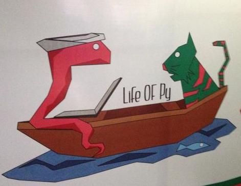

A decade back, college kids used to get taught assembly, C/C++ and Java. Javascript has taken over as the assembly language of the web. And, the place of C/C++/Java in the educational institutions is now dominated by Python.
I was honored to go from being a speaker at last year’s PyCon to being a part of the program committee for the 2014 PyCon which concluded in the last week of September. The Pycon conference is organized by PSSI, a community driven non-profit similar to PSF in the US. The program committee’s focus is primarily on the content of the conference, and assists with curation and mentoring speakers. The committee is a part of the significantly larger volunteer driven organizing team which handles other aspects of sponsorship, logistics, food and setup. While I’d chaired the Droidcon committee earlier, this was a new experience in a very different tech community.
Here are my 10 highlights of the event. This is of course a personal account, and my views are my own.
Python is Everywhere.
It’s been a privilege being a part of what is arguably one of India’s largest tech events, and one of the largest PyCon events around the world. I’m always amazed at how this little microcosm of the python universe reminds us of how far and wide the language is used. Web programming. Machine learning. 3-D Modeling. Weather forecasting. Gaming. Education. Embedded Systems. And in the local community, a wonderful effort has been initiated by Anand to expand Python Month to a year long initiative to help educate newbies with Python. Say hello to Python Express. If you are a professor, a student or a trainer, I’d encourage you to consider signing up or seeing if there’s already a workshop happening close to where you live.
Collaborating with an amazing Program Committee.
The core program committee consisted of Krace, Konark, Kushal, Senthil and I. We were faced with the challenge of having to look at the 140+ submissions and choose around 20 from them. This ended up being incredibly hard since there were several excellent proposals.
Rough Approach.
Here’s the rough approach we took, and a full account deserves a formal post on the PyCon blog.
- Between us, we broke out the different sections of submissions for review with a primary and secondary owner for each section.
- This let us divide and conquer so that each person need not review more than 30-40 proposals.
- We would read through the abstracts, go through slides (where available), request past speaker videos, and go through upstream contributions.
- Having a primary and secondary owner reduced the bias that a single reviewer may have, although it’s hard to completely avoid group think.
- To the extent that was possible, we interacted with people via the submission funnel, requesting additional information and posting feedback.
- Based on this, we shortlisted about 30 odd speakers, including a few who were waitlisted.
- We then rigorously followed up with each individual speaker to whet their slides, talk through their presentation structure, demo content, and key takeaways for the audience.
We were supported by Noufal and Anand who joined us on a number of the hangouts we organized every few weeks to ensure we were on the same page, and had consensus on key decisions being made. Senthil, in addition to his review of core and embedded content, also drove the workshops. Pratap and Kathir were external reviewers who helped with inputs of the scientific computing submissions since the committee didnt have sufficient experience internally. Vijay, in addition to several other duties running the conference, helped put together most of the schedule.
Also, here are some structured guidelines we put together for the speakers. If you’d like to view the full 12 page slidedeck, it’s up here on SlideShare.
The feedback ratings post conference show a significant improvement from the previous years ratings. Apart from two talks, all the other talks had relatively positive ratings, and a handful had high ratings. So we must have been doing something right with several long hours in our spare time that went into this. That said, there’s still lots of room for improvement, and there always will be.
Original Work.
The session by Sandeep on an Sharq, open source rate limited queueing system he’d built was one of the standout sessions of the conference. It wasn’t one of the most popular sessions, and it mostly attracted a niche crowd. But where it stood out, was in terms of original work that had been done. I had a chance to check out his work before the conference, and played around with it. Although unacknowledged, it may be partly derived from work by Alan Shreve (whose work is however not open sourced). It’d be great to see more people in the community come forward and show off their original work, and perhaps more importantly, leverage the conference platform to find others to collaborate with and build on each others good work.
Conferences are fun.
Heh, we even found time to shake a gangnam leg on stage for posterity later in the evening.
Kushal’s Keynote.
Kushal delivered a personal keynote that chronicled his journey. From his beginnings in his village, through learning technology, contributing upstream, learning from others around him, coaching and mentoring others, it was a wonderful journey told straight from the heart. If you haven’t look up the excellent work DgpLUG now does - they have their unofficial(?) annual meeting on the stairway at PyCon. I was sitting with him just minutes before he got started with the keynote, and he wanted me to look through his slides. As he started to walk me through them, I had to interrupt him - I was so touched by the first few slides that I selfishly told him that I wanted to just hear him live on stage. I’d like to think I made up for that by clicking him in this Moses pose, parting the upstream waters for aspiring contributors.
I’m sure Kiran’s keynote last year and Kushal’s this year will inspire several to think upstream. I’d love to see more such personal stories that weave in key themes that set the tone for the conference.
Dinner with the Speakers.
We did this smaller, intimate dinner with the speakers and volunteers on one of the evenings at Barbeque Junction in Koramangala. The food was passable, but the conversations were electric. I caught up with Sonal, Dhananjay and Vajrasky over dinner, and we had an enthralling discussion about work, travel, and culture.
Old Faces, New Faces.
I met a number of incredibly smart people, and I wish I could recall enough names to list them here. While some of the sessions were by veteran speakers, there were a couple of first time speakers. One of them that stood out was a session on Medusa, a Dart generator, that was presented by Rahul, a college student. I snuck out of the conference in between to go attend the Bangalore Literature Festival for a bit with Abhay, and apparently missed seeing a 9 year old present about his work with Arduino. It was also nice to meet familiar faces from previous PyCons and hang out on the stairway. I don’t know about more Audis, but the conference hall likely needs more stairways soon! Noufal. Anand. Kiran. Dhananjay. Sonal. Krace. Shrayas. Abhishek. Kushal. Anand. Sankarshan. Michael. Haris. Sandeep. Vajrasky. Abhay. And the many more whose names I cant remember now. Thanks for terrific conversations.
Panel - Flask vs Django vs Web.py
Ok, I’ll admit I’m biased since I came up with the idea for this panel and I also moderated the discussion. After my talk on Flask at last year’s PyCon, I got a number of questions about choosing the right framework. It’s often a nuanced choice, and there’s no one size fits all answer. I thought it would make for an engaging conversation in a debate style format to get the different tradeoffs involved directly from experienced practitioners. One of the things I didn’t want to do however was to script the panel discussion. I prepped the panelists so that a general sense of the structure of the discussion, and the high level themes were clear, but we avoided discussing specifics until we were on stage.
I was nervous an hour before the panel. There were just a ton of little things to juggle. I skipped lunch to get set up on stage and prep.
I had to walk the difficult line between maintaining structure and retaining spontaneity. I kept the Twitter #pyconindia stream open on one screen along with my moderator notes, and the slides projected on the other. I wasn’t sure how well conference Wi-Fi would hold out, but I was going to meld in questions that came in via the Twitter hash tag into the panel itself. My moderator notes had specific questions, timelines for reach round of discussion, and icebreakers.
It was also important to engage with the panelists to ensure they had sufficient talk time on each point, and countered each others points. To make things a bit harder, we were on just after a big hearty lunch, and some amount of levity was essential to avoid the audience going into mass coma.
I loved the energy of the debate, and I thought the three panelists - Anand, Kiran and Arun were outstanding. I think we are fortunate to have such experienced practitioners together on stage. Anand is a co-author and maintainer of Web.py and had collaborated with Aaron Swartz. Kiran has been using Flask at scale actively at HasGeek over the last few years. Arun is an acknowledged expert on Django and has a book coming out soon. I’m honored to have shared the stage with them that afternoon.
At one point, it amused me how Kiran who had initially been on the fence about taking a strong position with Flask started thumping the Alchemy bible whenever Anand dissed ORMs. That got the audience really going. Arun was Django unchained, and held his ground throughout pretty well.
I’d built a basic missed call voting system which we used at the end to poll the audience. 402 people voted via their phones in the space a minute. I was relieved that the system held up when it had to, although Wi-Fi dropped and we couldn’t project the live results. The clear winner was Django.
During planning as well as setup, I received great inputs and suggestions from Krace, Konark and Mukesh. Also, Abhishek helped pull together the awesome visualization of the voting on codepen.
Open Spaces!
We followed up the panel with a deep dive in the Open Space area upstairs at Nimhans. With a smaller group of 25-30 folks, it was a good opportunity to dig into the nuances a little more, talk about personal experiences, and also cover off frameworks like Pyramid and Twisted. The discussions could have been more interactive, but some of this will take time to evolve. I’ll likely spend more of my time in open spaces next year than in sessions.
Pure Volunteer Magic.
It’s incredible how much volunteer effort goes into the conference. Apparently there were over 1200+ delegates, which means a packaged house at the Nimhans venue. Volunteers worked round the clock the week of the conference to get the food, decorations, handouts, T-shirts, registration and sponsor booths, and a zillion little things right. With this being a volunteer driven event, there’s also a ton of chaos. Communication isn’t always great, a few people end up doing a sizeable chunk of the work, and a few things always fall through. But, it’s the self organizing nature of community events which makes them special and unique. The early bird price of the ticket for the event is INR 800 (USD 13), which is ridiculous value for the two days of great sessions, meeting smart people, eating scrumptious food, and getting a fun conference tee. In contrast, most other good tech events in Bangalore are often upwards of INR 3000 or more, and dont often include the swag.
Life with Py is good!